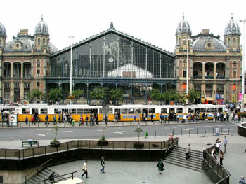
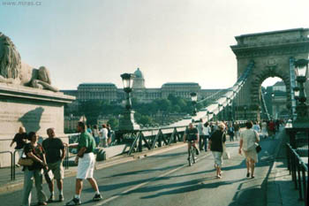

Sedam razloga zašto volim Budimpeštu
Sedam razloga zašto volim Budimpeštu:
1. Fasade - Kad otputujem, dobijem neku vrstu ograničene amnezije. U većini gradova, sem onih par neponovljivih, sve mi je savršeno normalno - kao i kod nas. Kad sam bila u Budimpešti prvi put, negde u jesen '98, taman kad su rešili da nas neće baš tad bombardovati, nego malo kasnije, bila sam u fazonu: "Što se svi nešto kao lože na Budimpeštu, kad je isto kao u
Beogradu??". Imaš Dunav, imaš tvrđavu na brdu, ulice, klasične zgrade, to je to. Onda mi se
kaže, aman, pa pogledaj te zgrade, jel' vidiš ti te sređene fasade, čiste ulice, osvetljene zgrade...Onda sam, posle više puta tamo-ovamo ipak pristala da primetim da je Budimpešta, mada u osnovi ista vrsta grada kao Beograd ili Novi Sad, neuporedivo sređenija, sa više spektakularnih zgrada i drugih znamenitosti, funkcioniše odlično, ne izaziva nervozu ni u najavi.
2. Široke ulice - Jedan od razloga za pomanjkanje nervoze su široke prave ulice, kao norma. I široki trotoari. Hodaš kao damica, a ne kao kaskader, as in hilly Balkans.
3. Ne razumem jezik - Upoznala sam ljude, više njih, koji su u Mađarskoj živeli po više godina, i nisu naučili jezik. Tako da kad sam tamo proboravila dva meseca, nučila sam pet reči i bila zadovoljna.
Ali, aspekt nepoznavanja jezika u zemlji gde si neko vreme ima tu prednost, kao što se složih sa nekim simpa istomišljnicima, što nemaš pojma šta ljudi oko tebe pričaju. Jednostavno, do tebe stignu glasovi, ali ne i poruke. Ne bih ni znala da je to tako rasterećujuće, da se nije desilo samo od sebe.
4. Sziget - Mislim samo na ostrvo i park, ne na festival, jer na njemu nisam bila. Ostrvo mi je toliko super, da čak ne mogu ništa ni da kažem o njemu. Pogledajte slike, uostalom. U svakom slučaju, deo je one priče o parkovima, kakve mi nemamo.
5. Metro - Boraviš na ivici grada, recimo u studentskom domu Kerepeši. Van dometa metroa. Do njega stižeš autobusom, koji saobraća u tačno određenim petominutnim intervalima. Onda metro. U centru grada si za kratko, i dalje kao damica, nervoze se nisi ni setio/la.
6. Mostovi - šta sad tu ima uopšte da se priča?
7. Tramvaj - Žuti, čisti, starinski, uvek prazni, nekako romantični. Sad su uveli i neke supermoderne.
I tako. Baš baš volim Budimpeštu.
Još super slika, ovde.
UPDATE:
NEW YORK TIMES ima fini tekst 3. septembra o Budimpešti. A Quote:
"Cultures have been clashing in Budapest for a good many centuries, and usually not to Hungary’s benefit. But through several waves of occupation, tyranny and heroic revolt, it has become one of the few places on earth that have learned the trick of transforming that clash into music.
A spectacularly beautiful and subversively lively old royal capital, Budapest has in the last decade or so languished in the shadow of Prague, which emerged more quickly as a tourist destination after the Communist era. Even Arthur Phillips’s best-selling 2002 novel, “Prague,” was actually about expatriates in Budapest dreaming of the higher life across the Czech frontier."
Komentari
ja na mađarskom znam sledeće reči:
a) fekete - crno
b) Ege šegede - živeli
c) tecik/nem tecik - sviđa mi se/ne sviđa mi se (ili tako nešto)
 Ljube | 03.08.06 12:20
Ljube | 03.08.06 12:20
ja sam bila u budimpesti dva puta. bilo mi je grozno. videla sam da je grad lep ali sam ga zbog toga bas mrzela. ja sam jedno zavidljivo govno od coveka :)
Jada iz Eleja | 04.08.06 05:17
Jo napot, kedves nezoink!
Odo ja na Sziget, sledeci vikend, pa cu da javim utiske. Mene Budimpesta podseca na kucu, na mamu, na baku, na TV... na sve lepo. Ja je ne bih uporedjivala je sa Beogradom ili Novim Sadom. Cak ni izdaleka, jer je ogromna i ima toliko razlicitih delova. Jedino sto mi je cudno, posle larinog posta o jezicima koje bi dozivotno ucila, predavanje pred madjarskim?! Nem! Tanulyunk magyarul!
organizam | 04.08.06 06:02
balra - levo, jobra - desno, ut - put, utca - ulica, hid - most, tenger - more, tanjer - tanjir, nap - sunce, dan, ešte - veče, jo - dobar, nem jo - ne dobar, penz - pare, kanal - kašika, leveš - supa, konjv - knjiga, tudom, nem tudom - znam, ne znam, ferfi - muško, noi - žensko, krumpli - krompir, testa - testo, kenjer - hleb, tuz - vatra, bicikli - bicikla, huš - meso, aranj - zlato, sep - lep, talalkozni - videti, beselni - govoriti, marvanj - mermer, tojaš - jaje, kapusta - kupus, asonj - žena, gospođa, paradičom - paradajz, uborka - krastavac, draga - skupo, kemenjšepro - odžačar ili kamena metla (zavisi od izgovora :), oroslany (lav ili ruska devojčica - zavisi od izgovora :), njitva - otvoreno, zarva - zatvoreno, siv - srce, surke - sivo, kek - plavo, piroš - crveno, zold - zeleno, šarga - žuto, menj - ići/postati, fuj a sel - duva vetar, šut a nap - sija sunce, cipo - cipele, patika, đođsertar - apoteka, nadrag - pantalone, kiš - malo, nađ - veliko, somoru - tužan, faj - boleti, gondolni - misliti, sabad - slobodan, ora - sat, šegit - pomoći, šege - dupe, eđ, keto, harom, neđ, ot, hat, het, njolc, kilenc, tiz, tizeneđ, tizenketo...hus. (1...20). Tanulni - učiti. Minden - svaki. Nap - dan. Kezičokolom - ljubim ruke.
organizam | 04.08.06 06:45
Bravo Org! I lep provod
La Lara | 04.08.06 09:12
Budimpesta je jos jedan od gradova u kome bih tako rado proveo par godina zivota. Organizam, you rule!
kiko | 04.08.06 10:54
Jesam li pominjala CD i recnik katalonskog koji u stanu strpljivo cekaju poziv za preseljenjem u Barselonu pa da se aktiviraju?
La Lara | 04.08.06 13:54
Yahti.com time, sad kad vam posaljem test... :)
Zaboravila sam najvazniju Kosonom sepen - hvala lepo!
organizam | 05.08.06 10:15
JA OBOŽAVAM BUDIMPEŠTU! I, živela sam 5-6 godina tamo. Ustvari, živim još uvek, mada u mašti, iako nisam bila tamo već dve godine. Mislim da će mi srce prepući zbog toga. Neoprostivo sam ljuta na političare i vize i bla-bla... A i GOVORIM MAĐARSKI! uta-taaa... Ali, šta mi vredi...
LIVIJA LAZIĆ-KANKARAŠ | 08.04.07 15:38
 RSS feed
RSS feed
 sadržaji se objavljuju pod
sadržaji se objavljuju pod
Komentari
Hát, jó napot kivánok. Én Budapesti vagyok, és, nagyon szeretem eszt a várost.Újvideken (Novi Sad) már voltam, ep mint Bélgradon (Beogradu). Ném tudom hogy méjk város szeb... mind a három nagyon is szép...de azért, az én Budapestem a legszeb.
Sok, sok szerelemel Budapeströl.
Szijasztok :-)
valaki | 05.11.07 22:18
Nadam se da je nesto lepo & pristojno
la lara | 05.11.07 22:30